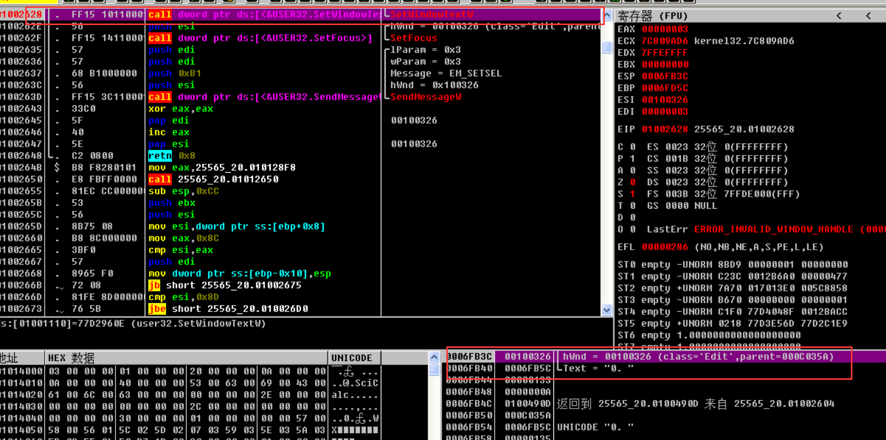
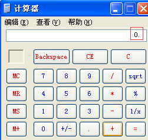
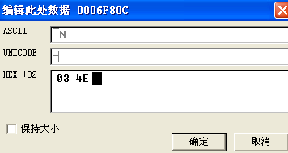
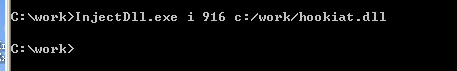
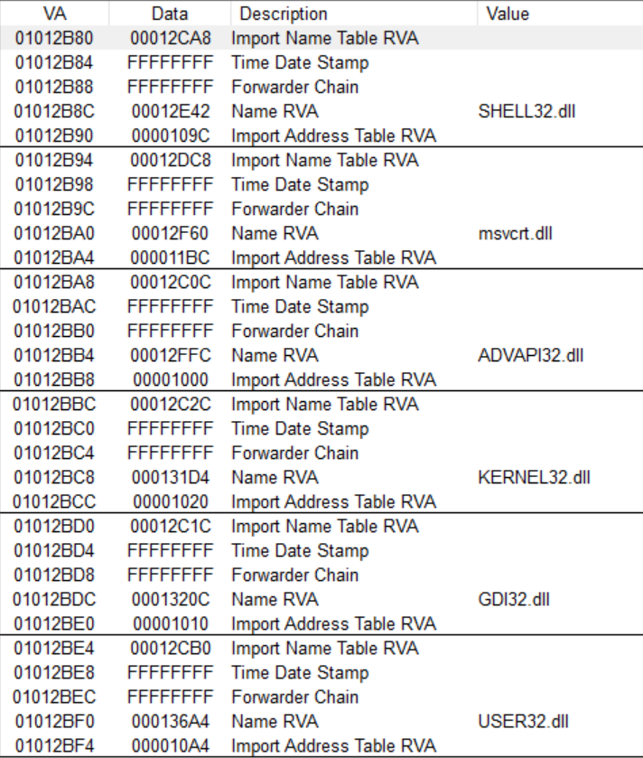
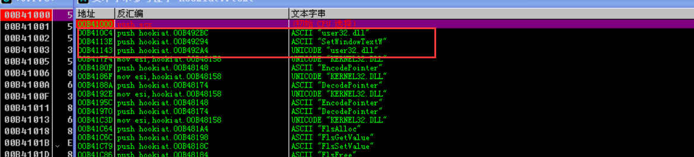
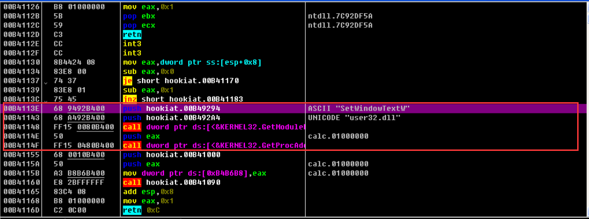
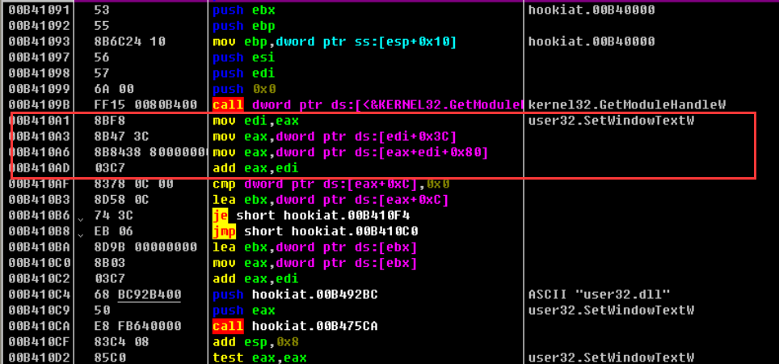

计算器显示成文字
将计算器显示的数字通过注入DLL文件显示成数字
OD法更改
首先利用OD修改内存中的值来实现计算器显示中文数字（这次还是在XP虚拟机里运行的）
用OD打开calc.exe 快捷键ctrl+N查看目标文件的API函数
这里我们发现的两个值得关注的API函数 SetWinsowTextW（）和SetDlgItemTextW（） 他们负责向计算器的文本显示框中显示文本 来看看SetWinsowTextW（）API定义：
1 | BOOLSetWindowText( |
hWnd
要改变文本内容的窗口或控件的句柄。不能改变在其他应用程序中的控件的文本内容，如果需要可以用另外一个SendMessage函数发送一条WM_SETTEXT消息。
lpString
指向一个空结束的字符串的指针，该字符串将作为窗口或控件的新文本。
这里我们关注第二个参考——字符串指针（lpString）钩取时查看字符串（lpString）中的内容 将其中的阿拉伯数字改成中文就行
然后在刚才关注的那两个API函数上设置断点
运行

第一次运行断在了SetwindowTextW这里 右下角堆栈窗口发现字符0就是计算器开始的在字符0

在运行断在了SetDlgItemTextW（）处 再次运行一下 计算器的页面出现了 为了继续调试 我们望计算器中输入7 发现OD自动在SetwindowTextW这里停了
看到了刚才说的那两个参数 在数据窗口跟随TEXT那一项发现了储存的数字7
将中文数字 七 的Unicode码（4e03）覆写到地址处 这里记得要逆序（034e）写入

发现数字7已经变成汉字七了！
运行程序在计算器中看到已经变了：
这里就算完成了OD的过程 对SetWinsowTextW（）API验证结束 接下来看看IAT钩取操作及其实现原理
IAT钩取工作原理
IAT钩取通过修改IAT中保存的API地址来钩取某个API 如图：
钩取IAT前 首先向计算器进程注入hookiat.dll文件
原理：在保持运行代码不变的情况下 讲IAT中保存的API起始地址变为用户函数的起始地址
练习示例
先复制文件到工作目录（c:work）然后运行calc.exe程序 再打开任务管理器查看其PID 如图：
然后在命令窗口执行如图命令：

接下来在计算器随便输入一些数值 如图：
我们可以看到 输入的数值已经变成了中文 计算器也在正常运行（其实我自己调试的这个InjectDLL.exe注入的hookiat.dll注入之后计算器显示的是韩文 可能是韩国人整的DLL文件吧 但确实是钩取成功了！！）
源代码分析（hookiat.dll）
Dllmain（）
1 | BOOL WINAPI DllMain(HINSTANCE hinstDLL, DWORD fdwReason, LPVOID lpvReserved) |
在DLL_PROCESS_ATTACH事件中先获取user32.SetWindowTextW的地址，然后保存到全局变量g_pOrgFunc中，后面脱钩会用到这个地址。
MySetWindowTextW()
1 | BOOL WINAPI MySetWindowTextW(HWND hWnd, LPWSTR lpString) |
lpString参数是一块缓冲区，该缓冲区用来存放要输出显示的字符串。for循环将存放在lpString的阿拉伯数字字符串转换为中文数字字符串。for循环结束后，最后再调用函数指针g_pOrgFunc。
hook_iat()1
2
3
4
5
6
7
8
9
10
11
12
13
14
15
16
17
18
19
20
21
22
23
24
25
26
27
28
29
30
31
32
33
34
35
36
37
38
39
40
41
42
43
44
45
46
47
48
49
50
51
52
53
54
55
56
57
58
59
60BOOL hook_iat(LPCSTR szDllName, PROC pfnOrg, PROC pfnNew)
{
HMODULE hMod;
LPCSTR szLibName;
PIMAGE_IMPORT_DESCRIPTOR pImportDesc;
PIMAGE_THUNK_DATA pThunk;
DWORD dwOldProtect, dwRVA;
PBYTE pAddr;
// hMod, pAddr = ImageBase of calc.exe
// = VA to MZ signature (IMAGE_DOS_HEADER)
hMod = GetModuleHandle(NULL);
pAddr = (PBYTE)hMod;
// pAddr = VA to PE signature (IMAGE_NT_HEADERS)
pAddr += *((DWORD*)&pAddr[0x3C]);
// dwRVA = RVA to IMAGE_IMPORT_DESCRIPTOR Table
dwRVA = *((DWORD*)&pAddr[0x80]);
// pImportDesc = VA to IMAGE_IMPORT_DESCRIPTOR Table
pImportDesc = (PIMAGE_IMPORT_DESCRIPTOR)((DWORD)hMod+dwRVA);
for( ; pImportDesc->Name; pImportDesc++ )
{
// szLibName = VA to IMAGE_IMPORT_DESCRIPTOR.Name
szLibName = (LPCSTR)((DWORD)hMod + pImportDesc->Name);
if( !_stricmp(szLibName, szDllName) )
{
// pThunk = IMAGE_IMPORT_DESCRIPTOR.FirstThunk
// = VA to IAT(Import Address Table)
pThunk = (PIMAGE_THUNK_DATA)((DWORD)hMod +
pImportDesc->FirstThunk);
// pThunk->u1.Function = VA to API
for( ; pThunk->u1.Function; pThunk++ )
{
if( pThunk->u1.Function == (DWORD)pfnOrg )
{
VirtualProtect((LPVOID)&pThunk->u1.Function,
4,
PAGE_EXECUTE_READWRITE,
&dwOldProtect);
pThunk->u1.Function = (DWORD)pfnNew;
VirtualProtect((LPVOID)&pThunk->u1.Function,
4,
dwOldProtect,
&dwOldProtect);
return TRUE;
}
}
}
}
return FALSE;
}
该函数主要负责钩取API
首先从ImageBase开始经由PE签名找到IDT
pImportDesc变量中存储着IMAGE_IMPORT_DESCRIPTOR结构体的起始地址，后者是calc.exe进程IDT的第一个结构体。IDT是由IMAGE_IMPORT_DESCRIPTOR结构体组成的数组。若想查找到IAT，先要查找到这个位置。使用PEView查看该地址(00012B80+01000000=01012B80)，如图所示。

在for循环中通过比较查找到user32.dll的IMAGE_IMPORT_DESCRIPTOR结构体地址，从上图可以看出最终pImportDesc的值为01012BF4。接下来进入user32的IAT，pImportDesc->FirstThunk成员所指的就是IAT。使用PEView查看该地址(000010A4+01000000=010010A4)，如图所示
接下来又在for循环中查找SetWindowTextW的IAT地址(01001110)，然后修改它的值。因为计算器进程的IAT内存区域是只读的，所以需要使用VirtualProtect在钩取之前将相应的区域改为可读写的，钩取之后再改回来。
调试被注入的DLL文件
首先运行calc程序 查看其PID的值
将程序进程附加到OD中 然后在事件中选定中断于新DLL进程 然后将hookiat.dll注入计算器进程
运行程序发现：
双击进入hookiat.dll中 接下来取消刚才事件中的中断于新DLL的选项 然后在hookiat模块查找参考字符串寻找DllMain（）代码 当然也可以F7单步跟踪查找 DllMain()函数中使用的字符串有“user32.dll”和“SetWindowTextW”

我们发现“user32.dll”有两处“SetWindowTextW”有一处 转到“SetWindowTextW”处：

框出来的内容就是DllMain（）函数了
这就是调试注入进程Dll的方法了
Dllmain（）
这个call语句就是调用hook_iat()
步入刚才那个call语句进入hook_iat()
hook_iat()
查找IMAGE_IMPORT_DESCRIPTION Table
hook_iat()是负责具体实施IAT钩取的核心函数 下面是调试一下：

框起来的部分就是IMAGE_IMPORT_DESCRIPTION Table（下面简称“IID Table”）的过程 一时难分代码仅仅用了4行代码就找到了ID Table
这个call指令用于调用stricmp（）函数。
在IAT中查找SetWindowTextW API位置
通过便利IID Table比较IID.Name于“user32.dll”字符串 查找到user32.dll的IID 找到之后 下面代码用来查找SetWindowTextW API位置 然后修改其中内容 从而实现对API的钩取
cmp语句中ESI的值为user32.dll的IAT起始地址 EBP的值为SetWindowTextW的地址 代码循环进入IAT SetWindowTextW的地址值（ebp的值）
IAT钩取
IAT钩取代码
MOV指令用来将MySetWindowTextW的地址覆写到前面从IAT中获取的SetWindowTextW的地址 执行后就变成了执行MySetWindowTextW地址的代码 也就是将数字变成汉字的代码段
隐藏进程
API代码修改技术的原理
IAT钩取通过操作进程的特定IAT值来实现API钩取 而API代码修改技术则将API代码的前5个字节修改为JMP XXXXXXXXXX指令来钩取API 调用执行被钩取的API时 JMP XXXXXXXXX就会被执行 转而控制hooking函数 后面描述的是 向process explorer进程（procexp.exe）注入stealth.dll文件后钩取ntdll.ZwQuery-SystemInformation（）API的整个过程（ntdll.ZwQuery-SystemInformation（）API是为了隐藏进程而需要钩取的API）
注入之前
首先看一下钩取之前正常调用API的进程内存。下图描述的是( 钩取之前)正常调用API的情形
procexp.exe代码调用ntdll.ZwQuerySystemInformation) API时，程序执行流顺序如下。
①procexp.exe的00422CF7地址处的CALL DWORD PTR DS:[48C69C]指令调 用ntdll.ZwQuerySystemInformation( API ( 48C69C地址在进程的IAT区域中，其值为7C93D92E，它是ntdll.ZwQuerySystemInformation() API的起始地址)。
②相应API执行完毕后，返回到调用代码的下一条指令的地址处。
注入之后
下面看看钩取指定API后程序执行的过程。先把stealth.dll注人目标进程( procexp.exe),直接修改ntdll.ZwQuerySystemInformation( API的代码( Code Patch ),如图所示。
首先把stealth.dll注人目标进程，钩取ntll.ZwQuerySystemInformation( API。ntdll.ZwQuery-SystemInformation(O) API起始地址( 7C93D92E)的5个字节代码被修改为JMP 10001120 (仅修改5个字节代码)。10001 120是stealth.MyZwQuerySystemInformation(函数的地址。此时,在procexp.exe代码中调用ntdll.ZwQuerySystemInformation( API,程序将按如下顺序执行
①在422CF7地址处调用ntdll.ZwQuerySystemInformation() API ( 7C93D92E )。
②位于7C93D92E地址处的( 修改后的) JMP 10001 120指令将执行流转到10001120地址处( hooking函数)。10001 16A地址处的CALL unhook()指令用来将ntdll.ZwQuerySystemInformation(API的起始5个字节恢复原值。
③位于1000119B地址处的CALL EAX(7C93D92E)指令将调用原来的函数（ntdll.ZwQuery-SystemlnformationOAPI)(由于前面已经“脱钩”，所以可以正常调用执行）。
④ntdll.ZwQuerySystemlnformation（）执行完毕后，由7C93D93A地址处的RETN 10指令返回到 stealth.dll代码区域（调用自身的位置）。然后10001212地址处的CALL hook()指令再次钩取 ntdll.ZwQuerySystemlnformation（）API(即将开始的5字节修改为JMP10001120指令）
⑤stealth.MyZwQuerySystemInformation(函数执行完毕后，由10001233地址处的RETN 10命令返回到procexp.exe进程的代码区域，继续执行。
上述过程刚开始看似很难，多看几遍，慢慢就会明白的。
使用API代码修改技术的好处是可以钩取进程中使用的任意API。前面讲过的IAT钩取技术仅适用于可钩取的API,而API代码修改技术无此限制，(虽然代码会更复杂一些)使用起来要自由得多。使用API代码修改技术的唯- -限制是， 要钩取的API代码长度要大于5个字节，但是由于所有API代码长度都大于5个字节 所以事实上这个限制是不存在的
练习（HideProc.exe，stealth.dll）
HideProc exe负责将stealth.dll文件注人所有运行中的进程。Stealth.dll负责钩取(注人stealth.dll文件的)进程的ntdll.ZwQuerySystemInformation() API。接下来我们使用上面2个文件隐藏notepad.exe进程。
运行notepad.exe procexp.exe taskmgr.exe
首先运行要隐藏的进程notepad.exe(要隐藏的进程) procexp.exe（钩取对象1） taskmgr.exe（钩取对象2）
运行HideProc.exe
运行HideProc.exe 将stealth.dll文件注入当前运行的所有程序：
简要介绍一下HideProc.exe命令的几个参数:
-hide/-show: -hide 用于隐藏，-show 用于取消隐藏。
process name:要隐藏的进程名称。
dllpath:要注入的DLL文件路径。
查看进程是否隐藏成功
我们发现任务管理器中的进程已经消失了 可是程序依然在运行 这就证明注入成功了
取消进程隐藏
我们可以发现在procexp.exe taskmgr.exe又能看到进程了
源代码分析
HideProc.cpp
1 | BOOL InjectAllProcess(int nMode, LPCTSTR szDllPath) |
首先通过SetPrivilege函数调用AdjustTokenPrivileges提升权限，然后在InjectAllProcess中使用CreateToolhelp32Snapshot获取系统中运行的所有进程的列表，使用Process32First与Process32Next将获得的进程信息存放到PROCESSENTRY32结构体变量pe中，进而获取进程的PID。获取了进程的PID后，要根据所用的命令选项来选择调用InjectDll函数还是EjectDll函数。当某进程的PID小于100时，鉴于系统安全性的考虑，忽略对它的操作。
Stealth.dll
1 | // global variable (in sharing memory) |
首先看导出函数SetProcName。先创建名为.SHARE的共享内存节区，然后创建g_szProcName缓冲区，最后再由导出函数SetProcName将要隐藏的进程名称保存到g_szProcName中。
DllMain()
1 | BOOL WINAPI DllMain(HINSTANCE hinstDLL, DWORD fdwReason, LPVOID lpvReserved) |
首先比较字符串，若进程名为HideProc.exe则不钩取API。发生DLL_PROCESS_ATTACH事件时，调用hook_by_code函数钩取API；发生DLL_PROCESS_DETACH事件时，调用unhook_by_code函数取消API钩取。
hook_by_code()
1 | BOOL hook_by_code(LPCSTR szDllName, LPCSTR szFuncName, PROC pfnNew, PBYTE pOrgBytes) |
它通过修改代码实现API钩取操作。JMP指令的实际形式为E9 XXXXXXXX，XXXXXXXX=要跳转的地址-当前指令地址-当前指令长度(5)。
unhook_by_code()
1 | BOOL unhook_by_code(LPCSTR szDllName, LPCSTR szFuncName, PBYTE pOrgBytes) |
unhook_by_code函数是用来取消钩取的函数，原理就是将函数代码开始的前5个字节恢复原值
NewZwQuerySystemInformation（）
1 | NTSTATUS WINAPI NewZwQuerySystemInformation( |
简单分析一下 将SystemInformationClass参数设置为SystemProcessInformation（5）后调用ZwQuerySystemInformation（）API，SystemInformation[in/out]参数中储存的是SYSTEM_PROCESS_INFORMATIN结构体单向链表的起始地址 隐藏某进程之前，先要查找与之对应的链表成员，然后断开其与链表的链接。
利用热补丁技术钩取API
前面demo程序中通过代码修改技术进行API Hook存在的缺点
1.频繁脱钩，挂钩会造成整体性能下降
2.多线程环境，当一个线程尝试运行某段代码，而另一进程刚好在对该代码进行写操作，这时就会发生冲突，会引起非法访问异常（Access Violation）。《windows核心编程》指出，利用代码修改技术钩取API会对系统安全造成威胁
热补丁（修改7Byte代码）
Windows系统库中的函数，如kernel32.CreateProcessA/W, user32.MessageBoxA，gdi32.TextOutW有一个相似点
1.API以MOV EDI, EDI指令开始(IA-32 0X8bff)
2.API上方有5个NOP指令(IA-32 0X90)
微软做此设计的目的就是方便打热补丁。
使用热补丁Hook API的过程如下
1.修改API开始的两个字节MOV EDI,EDI为SHORT JMP指令EB F9, 跳转的目标地址是address_of_api - 5，即5个NOP指令的第一条
2.修改5个NOP指令为长跳转E9 XXXXXXXX，跳转到用户自定义API
3.用户自定义代码调用原始API时，直接以API+2的地址为API地址调用原API，这样就不会引起内存非法访问
源码分析
DllMain（）
1 | BOOL WINAPI DllMain(HINSTANCE hinstDLL, DWORD fdwReason, LPVOID lpvReserved) |
和之前代码一样，在Dll附加进程的时候调用hook方法，在dll卸载时调用unhook方法
hook_by_hotpatch()
1 | BOOL hook_by_hotpatch(LPCSTR szDllName, LPCSTR szFuncName, PROC pfnNew) |
修改API中无用的7字节数据，跳转到用户自定义Hook函数
unhook_by_hotpatch
1 | BOOL unhook_by_hotpatch(LPCSTR szDllName, LPCSTR szFuncName) |
将7字节数据修改为原数据
NewCreateProcess
1 | BOOL WINAPI NewCreateProcessA( |
这里需要注意一点，在使用之前的hook方法进行API钩取时，在用户自定义NewCreateProcess函数开头需要调用unhook方法(防止进入钩取的死循环)，函数结尾需要调用hook方法进行重新钩取。
但是使用热补丁Hook时不需要这样反复脱钩，挂钩，只需在调用原始API时，使用address of API + 2的地址调用API即可
使用热补丁进行Hook的缺点
热补丁钩取技术有个明显的缺点，即不符合钩取条件（7字节无用代码）的API无法使用热补丁钩取
这样的API有，ntdll.dll提供的API 和kernel32.GetStartInfoA() 等
并非所有API都能使用热补丁钩取，所以使用前需要先确认要钩取的API是否支持，若不支持则需使用前面的5字节代码修改技术